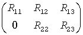

Intel® oneAPI Math Kernel Library Developer Reference - Fortran
Computes the generalized singular value decomposition of a pair of general rectangular matrices (deprecated).
call sggsvd(jobu, jobv, jobq, m, n, p, k, l, a, lda, b, ldb, alpha, beta, u, ldu, v, ldv, q, ldq, work, iwork, info)
call dggsvd(jobu, jobv, jobq, m, n, p, k, l, a, lda, b, ldb, alpha, beta, u, ldu, v, ldv, q, ldq, work, iwork, info)
call cggsvd(jobu, jobv, jobq, m, n, p, k, l, a, lda, b, ldb, alpha, beta, u, ldu, v, ldv, q, ldq, work, rwork, iwork, info)
call zggsvd(jobu, jobv, jobq, m, n, p, k, l, a, lda, b, ldb, alpha, beta, u, ldu, v, ldv, q, ldq, work, rwork, iwork, info)
call ggsvd(a, b, alpha, beta [, k] [,l] [,u] [,v] [,q] [,iwork] [,info])
This routine is deprecated; use ggsvd3.
The routine computes the generalized singular value decomposition (GSVD) of an m-by-n real/complex matrix A and p-by-n real/complex matrix B:
U'*A*Q = D1*(0 R), V'*B*Q = D2*(0 R),
where U, V and Q are orthogonal/unitary matrices and U', V' mean transpose/conjugate transpose of U and V respectively.
Let k+l = the effective numerical rank of the matrix (A', B')', then R is a (k+l)-by-(k+l) nonsingular upper triangular matrix, D1 and D2 are m-by-(k+l) and p-by-(k+l) "diagonal" matrices and of the following structures, respectively:
If m-k-l≥0,
where
C = diag(alpha(K+1),..., alpha(K+l))
S = diag(beta(K+1),...,beta(K+l))
C2 + S2 = I
R is stored in a(1:k+l, n-k-l+1:n ) on exit.
If m-k-l < 0,
where
C = diag(alpha(K+1),..., alpha(m)),
S = diag(beta(K+1),...,beta(m)),
C2 + S2 = I
On exit,  is stored in a(1:m, n-k-l+1:n ) and R33 is stored in b(m-k+1:l, n+m-k-l+1:n ).
The routine computes C, S, R, and optionally the orthogonal/unitary transformation matrices U, V and Q.
In particular, if B is an n-by-n nonsingular matrix, then the GSVD of A and B implicitly gives the SVD of A*B-1:
A*B-1 = U*(D1*D2-1)*V'.
If (A', B')' has orthonormal columns, then the GSVD of A and B is also equal to the CS decomposition of A and B. Furthermore, the GSVD can be used to derive the solution of the eigenvalue problem:
A'**A*x = λ*B'*B*x.
CHARACTER*1. Must be 'U' or 'N'.
If jobu = 'U', orthogonal/unitary matrix U is computed.
If jobu = 'N', U is not computed.
CHARACTER*1. Must be 'V' or 'N'.
If jobv = 'V', orthogonal/unitary matrix V is computed.
If jobv = 'N', V is not computed.
CHARACTER*1. Must be 'Q' or 'N'.
If jobq = 'Q', orthogonal/unitary matrix Q is computed.
If jobq = 'N', Q is not computed.
INTEGER. The number of rows of the matrix A (m≥ 0).
INTEGER. The number of columns of the matrices A and B (n≥ 0).
INTEGER. The number of rows of the matrix B (p≥ 0).
REAL for sggsvd
DOUBLE PRECISION for dggsvd
COMPLEX for cggsvd
DOUBLE COMPLEX for zggsvd.
Arrays:
a(lda,*) contains the m-by-n matrix A.
The second dimension of a must be at least max(1, n).
b(ldb,*) contains the p-by-n matrix B.
The second dimension of b must be at least max(1, n).
work(*) is a workspace array.
The dimension of work must be at least max(3n, m, p)+n.
INTEGER. The leading dimension of a; at least max(1, m).
INTEGER. The leading dimension of b; at least max(1, p).
INTEGER. The leading dimension of the array u .
ldu≥ max(1, m) if jobu = 'U'; ldu≥ 1 otherwise.
INTEGER. The leading dimension of the array v .
ldv≥ max(1, p) if jobv = 'V'; ldv≥ 1 otherwise.
INTEGER. The leading dimension of the array q .
ldq≥ max(1, n) if jobq = 'Q'; ldq≥ 1 otherwise.
INTEGER.
Workspace array, size at least max(1, n).
REAL for cggsvd DOUBLE PRECISION for zggsvd.
Workspace array, size at least max(1, 2n). Used in complex flavors only.
INTEGER. On exit, k and l specify the dimension of the subblocks. The sum k+l is equal to the effective numerical rank of (A', B')'.
On exit, a contains the triangular matrix R or part of R.
On exit, b contains part of the triangular matrix R if m-k-l < 0.
REAL for single-precision flavors
DOUBLE PRECISION for double-precision flavors.
Arrays, size at least max(1, n) each.
Contain the generalized singular value pairs of A and B:
alpha(1:k) = 1,
beta(1:k) = 0,
and if m-k-l≥ 0,
alpha(k+1:k+l) = C,
beta(k+1:k+l) = S,
or if m-k-l < 0,
alpha(k+1:m)= C, alpha(m+1:k+l)=0
beta(k+1:m) = S, beta(m+1:k+l) = 1
and
alpha(k+l+1:n) = 0
beta(k+l+1:n) = 0.
REAL for sggsvd
DOUBLE PRECISION for dggsvd
COMPLEX for cggsvd
DOUBLE COMPLEX for zggsvd.
Arrays:
u(ldu,*); the second dimension of u must be at least max(1, m).
If jobu = 'U', u contains the m-by-m orthogonal/unitary matrix U.
If jobu = 'N', u is not referenced.
v(ldv,*); the second dimension of v must be at least max(1, p).
If jobv = 'V', v contains the p-by-p orthogonal/unitary matrix V.
If jobv = 'N', v is not referenced.
q(ldq,*); the second dimension of q must be at least max(1, n).
If jobq = 'Q', q contains the n-by-n orthogonal/unitary matrix Q.
If jobq = 'N', q is not referenced.
On exit, iwork stores the sorting information.
INTEGER.
If info = 0, the execution is successful.
If info = -i, the i-th parameter had an illegal value.
If info = 1, the Jacobi-type procedure failed to converge. For further details, see subroutine tgsja.
Routines in Fortran 95 interface have fewer arguments in the calling sequence than their FORTRAN 77 counterparts. For general conventions applied to skip redundant or restorable arguments, see LAPACK 95 Interface Conventions.
Specific details for the routine ggsvd interface are the following:
Holds the matrix A of size (m, n).
Holds the matrix B of size (p, n).
Holds the vector of length n.
Holds the vector of length n.
Holds the matrix U of size (m, m).
Holds the matrix V of size (p, p).
Holds the matrix Q of size (n, n).
Holds the vector of length n.
Restored based on the presence of the argument u as follows:
jobu = 'U', if u is present, jobu = 'N', if u is omitted.
Restored based on the presence of the argument v as follows:
jobz = 'V', if v is present,
jobz = 'N', if v is omitted.
Restored based on the presence of the argument q as follows:
jobz = 'Q', if q is present,
jobz = 'N', if q is omitted.